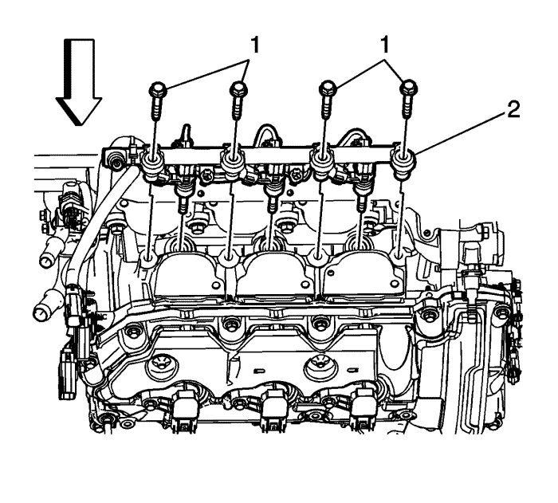
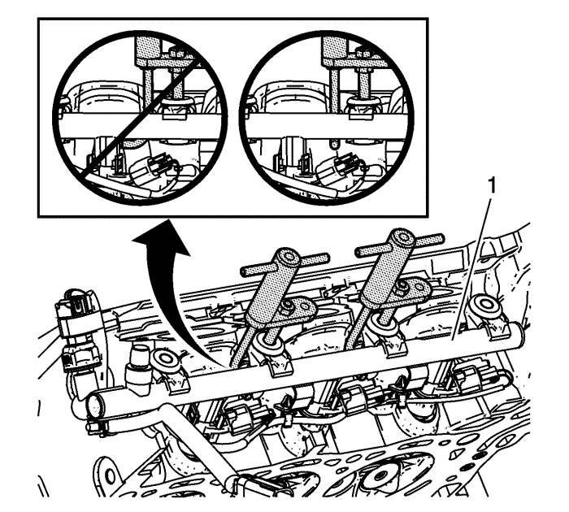
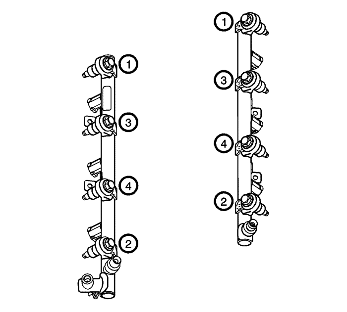

Sustitución del conjunto del tubo de distribución de los inyectores de combustible - Banco 2 — LF1
Herramientas especiales
EN-49248 Herramienta de desmontaje de conjunto de tubo de distribución del combustible
Si desea informarse sobre herramientas regionales equivalentes, consultar Herramientas especiales
Procedimiento de desmontaje
- Despresurice el sistema de combustible. Consultar Descarga de la presión del combustible .
- Desmonte el protector del tubo de combustible. Consultar Sustitución de la pantalla del tubo de combustible : LF1 .
- Desmonte el colector de admisión. Consultar Sustitución del colector de admisión .
- Desmonte la tubería intermedia de alimentación de combustible. Consultar Sustitución de la tubería intermedia de alimentación de combustible : LF1 .
- Retire la culata. Consultar Sustitución de la culata - lado izquierdo .

- Quite los tornillos (1) del tubo de distribución del combustible.

- Desmonte los inyectores (1) y el tubo de distribución de combustible como un conjunto utilizando el extractor EN-49248.
- Retire y deseche las abrazaderas de fijación de los inyectores directos de combustible.
Nota: Los inyectores directos de combustible deben reacondicionarse cada vez que el inyector se suelte del tubo de distribución de combustible o de la culata.
- Una vez extraído el tubo de distribución de combustible, desmonte los inyectores de combustible y reacondiciónelos. Consultar Limpieza e inspección de los inyectores y del tubo de distribución de combustible : LF1 o LFW .
Procedimiento de montaje
- Monte de manera uniforme en la culata el tubo de distribución del combustible con sus inyectores (2).
- Apriete con la mano los pernos exteriores de dicho tubo de distribución para acoplar los inyectores en sus orificios.
- Apriete con la mano los demás tornillos del tubo de distribución del combustible (1).
Precaución:Consulte Precaución con las fijaciones en la sección Prólogo.

- Apriete los pernos del tubo de distribución de combustible en la secuencia mostrada:
| 4.1. | Apriete los pernos del tubo de distribución de combustible del banco 1 en una primera pasada a 12 N·m (106 lb. pulg.). |
| 4.2. | Apriete los pernos del tubo de distribución de combustible del banco 1 en una pasada final a 23 N·m (17 lb. pie). |
- Monte la tubería intermedia de alimentación de combustible. Consultar Sustitución de la tubería intermedia de alimentación de combustible : LF1 .
- Enchufe el conector eléctrico del mazo de cables del inyector de combustible al sensor de presión de combustible y al tubo de distribución de combustible.
- Compruebe si existen pérdidas de combustible con el procedimiento siguiente:
| 7.1. | Conecte el encendido, con el motor desconectado durante 2 segundos. |
| 7.2. | Desconecte el encendido durante 10 segundos. |
| 7.3. | Ponga en marcha el encendido con el motor apagado. |
| 7.4. | Compruebe si existen pérdidas de combustible. |
Nota: Antes de montar el aislante de espuma, extraiga cualquier combustible que permanezca en el hueco del inyector.
- Monte el aislante de espuma en los tubos de distribución del combustible.
- Monte el colector de admisión. Consultar Sustitución del colector de admisión .
- Monte el protector del tubo de combustible. Consultar Sustitución de la pantalla del tubo de combustible : LF1 .
- Monte la culata. Consultar Sustitución de la culata - lado izquierdo .
- Monte la tapa de la boca de servicio de presión de combustible del lado de baja presión.
- Monte el tapón de depósito de combustible.
| © Copyright Chevrolet Europe. All rights reserved |